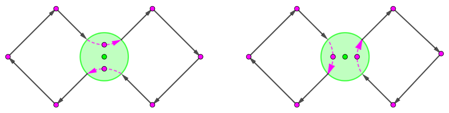

给定一个长度为 $N$ 的序列 $a = \left[ a_1, a_2, \cdots, a_N \right]$，其中 $a_i$ 为非负整数。
你现在可以执行如下操作若干次：
你的目标是通过若干次操作后，将序列 $a$ 变为 $b$。
求目标是否能达成，以及如果能达成时的最小的操作次数。
第一行包含一个正整数 $N$ ($2 \leq N \leq 10^5$)，表示序列的长度。
第二行包含 $N$ 个非负整数 $a_1, a_2, \cdots, a_N$ ($0 \leq a_i < 2^{30}$)，描述初始状态下的序列 $a$。
第三行包含 $N$ 个非负整数 $b_1, b_2, \cdots, b_N$ ($0 \leq b_i < 2^{30}$)，描述目标序列 $b$。
输出一行一个整数，如果目标可以被达成，则为所需要的操作次数的最小可能值；如果目标不能被达成，则为 $-1$。
考虑在原序列开头添加一个数 $a_0 = a_1 \oplus a_2 \oplus \cdots \oplus a_N$，并在操作过程中时刻保持 $a_0 = a_1 \oplus a_2 \oplus \cdots \oplus a_N$ 成立，则不难证明对 $i$ 的操作可以看成交换 $a_0$ 和 $a_i$。
于是对 $b$ 也如法炮制地添一个 $b_0 = b_1 \oplus b_2 \oplus \cdots \oplus b_N$，从而整个问题就转化成了：
有两个等长序列，每次可以选择一个数与序列开头的那个数 (即 $a_0$) 交换，询问若干次后能不能到 $b$，以及最小步数。
先看能不能达成。首先，一个显然地必要条件两个序列构成的可重集相同。其次，它的充分性也容易证，因为，如这里所述，我们还是可以通过这些操作合成一个交换任意两个数的操作：
$$ \left[ a_0, a_i, a_j \right] \to \left[ \color {red} {a_i}, \color {red} {a_0}, a_j \right] \to \left[ \color {blue} {a_j}, a_0, \color {blue} {a_i} \right] \to \left[ \color {fuchsia} {a_0}, \color {fuchsia} {a_j}, a_i \right] $$
于是只需检验可重集是否相同即可判断是否有解，排序一下容易完成。
接下来考虑，在这种限制的交换 (每次交换第一个元素和第 $i$ 个元素)，将一个序列排序所需要的最少的交换次数。
(ps: 因为可以通过离散化/排序来使 $b_i$ 变成升序，从而整个问题可以转化为排序问题)
先考虑更简单的版本：所有数互不相同，即 $a$ 是一个 $n$ 元排列/置换 (当然，这里的 $n = N + 1$)。
众所周知，如果交换没有限制 (即每次可以交换任意两个元素)，则交换次数的最小值 $= n - \# \left( a \right)$，其中 $\# \left( a \right)$ 为 $a$ 的循环数。
那么，对这种有限制的交换，(首先用于相邻交换的逆序数显然不靠谱) 主要思路还是类似的 —— 对 $a$ 进行循环分解 (Cycle decomposition)，然后逐个考虑这些循环。
当然，由于在这个置换中 $1$ 和其它元素的地位是不对等的，因此我们要将 $1$ 分开来单独考虑。
$a_1 = 1$，即 $1$ 所在的循环长度为 $1$。
此时，考虑其它每个长度为 $L$ ($L \geq 2$) 的循环，由于每次交换都需要经过元素 $1$，因此第一次交换会合并这两个循环，得到长度为 $L + 1$ 的循环，然后花 $L$ 步将这个循环排好序，所以 $L + 1$ 步可以完成。
同时，容易证明，如果仅有这个长度 $\geq 2$ 的循环，那么操作步数的最小值就是 $L + 1$。
对于有多个长度 $\geq 2$ 的循环的情形，也是类似的，设这些循环的长度分别为 $L_1, L_2, \cdots, L_y$ ($L_i \geq 2$)，那么，根据上面的构造，我们可以在 $\left( L_1 + 1 \right) + \left( L_2 + 1 \right) + \cdots + \left( L_y + 1 \right)$ 步内完成。
同时，它也是答案的下界 —— 首先每一步还是至多拆一个循环，但是一个循环在拆之前的时刻必定包含 $1$，从而每个循环都至少需要花 $1$ 步来和 $1$ 连通，而这一 "连通" 又会将循环总数减少 $1$。
从而每个循环会比原先没限制的情况浪费两步，从而总步数自然就是 $$ \large \left( L_1 + 1 \right) + \left( L_2 + 1 \right) + \cdots + \left( L_y + 1 \right) $$
(ps: 在没有限制的情况下总步数也可以写作 $\left( L_1 - 1 \right) + \left( L_2 - 1 \right) + \cdots + \left( L_y - 1 \right)$)
这里要说明的一点是，我们需要强调这里的循环长度 $\geq 2$，因为事实上，对于长度为 $1$ 的循环，我们根本就不需要去理会它，所需步数仍然是 $0$ 而不是 $2$。而原先的表达式中，$L_i - 1$ 恰好是 $0$，从而我们不需要考虑它。
$a_1 \neq 1$，即 $1$ 所在的循环长度大于 $1$。
和上面类似，无非就是「$1$ 所在的那个循环」的不需要花费那额外的两步来专门和 $1$ 连通。从而步数就是 $$ \large \left( L_1 + 1 \right) + \left( L_2 + 1 \right) + \cdots + \left( L_y + 1 \right) \color {fuchsia} {- 2}$$
最后我们来将其一般化 —— 即有些元素允许相同。
我们考虑在循环分解后对应的有向图 $G$ 中，它是由若干个有向圈构成的，其中每个圈对应一个循环。
那元素相同意味着什么呢？比如最简单的，两个元素相同，就意味着两个元素是不可区分的。
也就是说，在 $G$ 中，那两个点是不可区分的。如下图所示：
比如说我们有两个 $6$，那么我们可以将它们看成 $6_A$ 和 $6_B$，于是能对应到两种不同的置换：一种是 $\left[ \cdots, 6_A, \cdots, 6_B, \cdots \right]$，另一种是 $\left[ \cdots, 6_B, \cdots, 6_A, \cdots \right]$
而对应到 $G$ 中，相当于交换了它们的出边，如上图所示，从而对应到的两种不同的置换一定是前者具有一个大循环，后者具有两个小循环。
根据前面的结论，忽略大小为 $1$ 的循环后，循环的个数越少，所花费的步数也就越小。因此，对于这种种多个数相同的情况，我们一定选择使有向圈个数尽可能少的一种方案，对应于上图就是选择左边那种。
于是，我们对这些 "不可区分" 的元素就进行 "缩点" 后 (从而一个顶点可能由多条入边和多条出边)，最终每一个连通分量都可以看成一个有向圈 (如果不行，则按照上图的过程进行调整，则有向圈的个数单调递减，到无法调整时就只有一个了)。
那最终的步数就等于图中的边数加图中的大小 $> 1$ 的连通分量数 (ps: 这里使用边数的原因是忽略大小为 $1$ 的连通分量/长度为 $1$ 的循环)。
当然，还是不要忘记对 $1$ 号元素进行特殊讨论。不过这回有三种情况了：
$1$ 所在的循环长度为 $1$，且它在 $G$ 中是孤立点。
这种情况最简单，既然它都是孤立点了，因此其它的每个圈 (连通分量) 仍然需要浪费两步来和它连通，从而步数仍然等于 $\color {fuchsia} {\left| E \right| + C}$，其中 $\left| E \right|$ 为非自环边数，$C$ 为大小 $> 1$ 的连通分量数。
$1$ 所在的循环长度为 $1$，且它在 $G$ 中处于一个大小 $> 1$ 的连通分量中。
此时，设那个点为 $v$，则除了那个自环外，其余的 $v$ 点显然合并为一个圈，考虑 $v$ 是否合并：
若 $v$ 不合并，则步数等于 $\left| E \right| + C$。
若 $v$ 合并，则其中一个圈长增加 $1$，但是由于这个圈包含位置 $1$，因此可以节省那浪费的两步，因此步数等于 $\left| E \right| + C - 1$。
综上，$v$ 合并总比不合并的步数更少。从而这类情况的步数等于 $\color {fuchsia} {\left| E \right| + C - 1}$。
$1$ 所在的循环长度大于 $1$。
这种情况也比较简单，只需要减去浪费的两步即可，步数等于 $\color {fuchsia} {\left| E \right| + C - 2}$。
于是，我们只需要将 $a_i, b_i$ 离散化后，使用并查集来维护图的连通分量个数。最后对 $1$ 所在的循环长度进行讨论即可。
时间复杂度 $O \left( N \log N \right)$。
#include <bits/stdc++.h>
typedef std::pair <int, int> pr;
const int N = 100054;
int n, V;
int a[N], b[N];
int ck[N], p[N], size[N];
pr D[N];
int ancestor(int x) {return p[x] == x ? x : (p[x] = ancestor(p[x]));}
inline bool Union(int x, int y) {
if ((x = ancestor(x)) == (y = ancestor(y))) return true;
return size[x] < size[y] ? (p[x] = y, size[y] += size[x]) : (p[y] = x, size[x] += size[y]);
}
int main() {
int i, j, ans = 0; V = 0;
scanf("%d", &n), ++n;
for (i = 1; i < n; ++i) scanf("%d", a + i), *a ^= a[i];
for (i = 1; i < n; ++i) scanf("%d", b + i), *b ^= b[i];
for (i = 0; i < n; ++i) D[i] = pr(a[i], i);
std::sort(D, D + n);
for (i = 0; i < n; ++i) a[D[i].second] = (i && D[i].first == D[i - 1].first ? V - 1 : (D[V] = D[i], V++));
for (i = 0; i < n; ++i) {
j = std::lower_bound(D, D + V, pr(b[i], 0)) - D;
if (j == V || D[j].first != b[i]) return puts("-1"), 0;
b[i] = j;
}
for (i = 0; i < n; ++i) ++ck[a[i]], --ck[b[i]];
if (std::count(ck, ck + V, 0) != V) return puts("-1"), 0;
std::iota(p, p + V, 0), std::fill(size, size + V, 1);
for (i = 0; i < n; ++i) if (a[i] != b[i]) Union(a[i], b[i]), ++ans;
for (i = 0; i < V; ++i) ans += p[i] == i && size[i] != 1;
ans -= (*a == *b ? size[ancestor(*a)] != 1 : 2);
printf("%d\n", ans);
return 0;
}
坑1：最后对 $1$ 所在循环的情况进行讨论时稍为复杂，需要小心一点，不要漏考虑情况了。
坑2：并查集计算时注意不要计入大小为 $1$ 的连通分量。